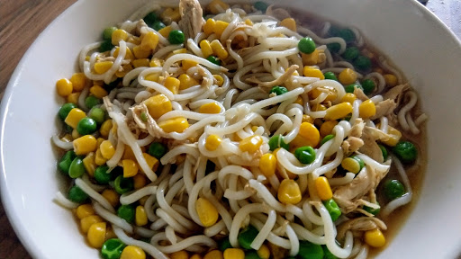

Pot noodle
Stuck for after-school meals? This recipe is quick, filling & nutritious, plus it’s low in salt & can be packed full of their favourite veggies.
Ingredients
- 70 g fine Chinese style dried egg noodles or use straight wok noodles
- 125 ml chicken stock
- 1 1/2 tsp dark soy sauce
- 25 g frozen peas
- 35 g drained canned or frozen sweetcorn
- 50 g cooked chicken, shredded
- 1/2 tsp cornflour
Instructions
- Cook the noodles according to the packet instructions (or use pre-cooked noodles).
- Drain and set aside.
- Put the stock, soy sauce, peas, sweetcorn and chicken in a pan over a medium heat.
- Bring to a simmer and cook for 2 minutes.
- In a small cup, mix the cornflour with 2 tsp of cold water and add to the contents of the pan then cook, stirring, for a further minute until the liquid thickens slightly.
- Add the noodles and reheat briefly, stirring.
Source
www.annabelkarmel.comShort URL Long URL Print